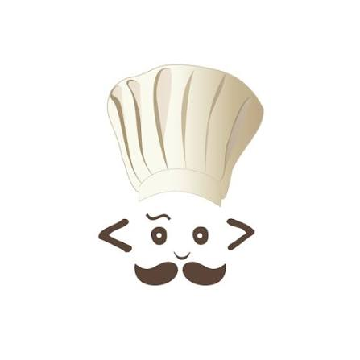
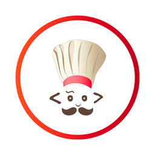

Plataforma online de aprendizado de programação com desafios e competições.
Página Principal
Multiplas Linguagens

Desafios de Programação

Competições e interação
Plataforma online de aprendizado de programação com desafios e competições.
Página Principal
Multiplas Linguagens
Desafios de Programação
Competições e interação
A CodeChef é uma plataforma online voltada principalmente para o aprendizado e a prática de programação. Seu objetivo é oferecer um ambiente no qual estudantes e desenvolvedores possam aprender conceitos de programação, resolver problemas e desenvolver suas habilidades por meio da prática. A plataforma reúne conteúdos e atividades que podem ser utilizados tanto por pessoas que estão iniciando na programação quanto por usuários que desejam aprimorar seus conhecimentos.
Na área de programação, a plataforma disponibiliza problemas e exercícios utilizando diferentes linguagens de programação, como C, C++, Java, Python e JavaScript. Os desafios apresentam diferentes níveis de dificuldade e abordam conceitos como algoritmos, estruturas de dados, lógica de programação e resolução de problemas, permitindo que o estudante avance gradualmente conforme desenvolve suas habilidades.
A CodeChef também utiliza a resolução de problemas como uma forma de aprendizagem. Ao desenvolver soluções para os desafios propostos, o estudante precisa analisar o problema, elaborar uma estratégia e transformá-la em código. Essa abordagem permite praticar os conhecimentos de programação em situações que exigem raciocínio lógico e busca por soluções eficientes, indo além da simples leitura de conteúdos teóricos.
Outro aspecto da plataforma é sua utilização como ferramenta complementar ao ensino de programação. Professores e educadores podem utilizar problemas e atividades da CodeChef para propor exercícios práticos aos estudantes, enquanto os alunos podem utilizar a plataforma de forma independente para revisar conceitos e desenvolver suas habilidades. Dessa maneira, a CodeChef pode contribuir para o aprendizado da programação por meio da prática constante, da resolução de problemas e do desenvolvimento do raciocínio lógico.

O funcionamento da CodeChef é baseado na disponibilização de problemas, exercícios e desafios voltados principalmente para o aprendizado e a prática de programação. A plataforma organiza suas atividades de acordo com diferentes níveis de dificuldade, permitindo que o estudante pratique conceitos básicos e avance gradualmente para problemas que exigem conhecimentos mais aprofundados.
Durante os estudos, o usuário pode encontrar desafios relacionados a conceitos como lógica de programação, algoritmos, estruturas de dados e resolução de problemas. As atividades podem ser resolvidas utilizando diferentes linguagens de programação, como C, C++, Java, Python e JavaScript. O estudante deve analisar o problema apresentado, desenvolver uma solução e escrever um código capaz de produzir o resultado esperado.
Além dos exercícios individuais, a plataforma também disponibiliza competições e desafios de programação, nos quais os participantes precisam resolver diferentes problemas dentro de um determinado período. Essas atividades podem estimular o desenvolvimento do raciocínio lógico, da capacidade de análise e da elaboração de soluções para problemas computacionais.
A CodeChef também pode ser utilizada como recurso complementar no ensino de programação. Professores e educadores podem indicar problemas para que os estudantes pratiquem determinados conceitos, enquanto os alunos podem utilizar os desafios de forma independente para revisar conteúdos e desenvolver suas habilidades. Dessa forma, seu funcionamento combina resolução de problemas, experimentação de código e prática contínua, proporcionando um ambiente no qual o estudante aprende programação principalmente por meio da aplicação dos conhecimentos.

A CodeChef utiliza problemas de programação como uma das principais formas de prática, permitindo que o estudante desenvolva soluções para diferentes situações. Os desafios abordam conceitos de lógica, algoritmos e estruturas de dados, ajudando a desenvolver o raciocínio necessário para analisar problemas e transformá-los em soluções por meio do código.
A plataforma permite que os estudantes enviem seus códigos para serem avaliados automaticamente por diferentes casos de teste. Esse recurso ajuda a identificar se a solução produz os resultados esperados e permite que o usuário corrija erros, modifique seu código e tente novamente durante o processo de aprendizagem.
A CodeChef também oferece competições e desafios de programação nos quais os participantes precisam resolver diferentes problemas dentro de um determinado período. Essas atividades proporcionam uma forma prática de utilizar os conhecimentos adquiridos, além de estimular o raciocínio lógico, a análise de problemas e a busca por soluções eficientes.
Para os estudantes, a CodeChef oferece uma variedade de recursos voltados principalmente para o aprendizado e a prática de programação. A plataforma disponibiliza problemas e desafios de diferentes níveis de dificuldade, permitindo que o estudante pratique conceitos como lógica de programação, algoritmos, estruturas de dados e resolução de problemas. As atividades podem ser realizadas utilizando diferentes linguagens de programação, como Python, C, C++, Java e JavaScript.
A plataforma também oferece exercícios com avaliação automática, desafios e competições de programação, permitindo que os estudantes coloquem seus conhecimentos em prática. Após enviar uma solução, o código é analisado por meio de casos de teste, possibilitando verificar se o programa apresenta os resultados esperados. Esse processo permite identificar erros, testar diferentes abordagens e desenvolver maior familiaridade com a programação.
Para professores e educadores, a CodeChef pode funcionar como um recurso complementar ao ensino de programação. Os problemas e desafios disponíveis podem ser utilizados como atividades práticas para reforçar conceitos apresentados em aula, enquanto as ferramentas de avaliação permitem que os estudantes pratiquem a resolução de problemas e recebam um retorno sobre suas soluções.